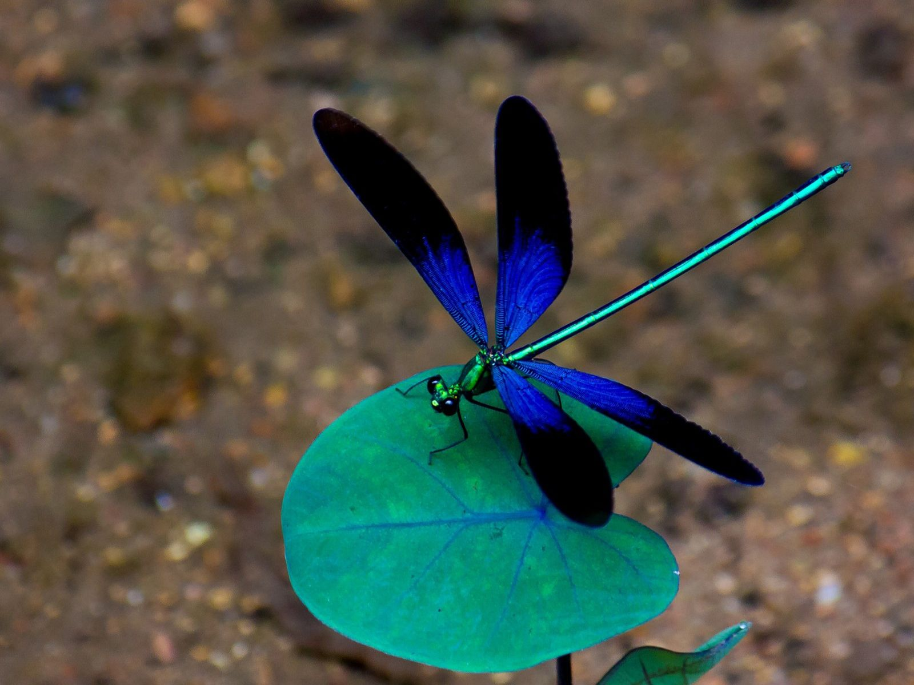

Hola queridos usuarios!, este es mi blog sobre los insectos, solo coloque algunos tipos de insectos ya que son los que mas me gustan, cabe aclarar que solo me gusta verlos de legos y apreciar sus formas, pero no me gusta tocarlos porque me dan miedo :(, bueno sin mas rollos les presento mis 5 tipos de insectos favoritos.
 1.HEMIPTEROS